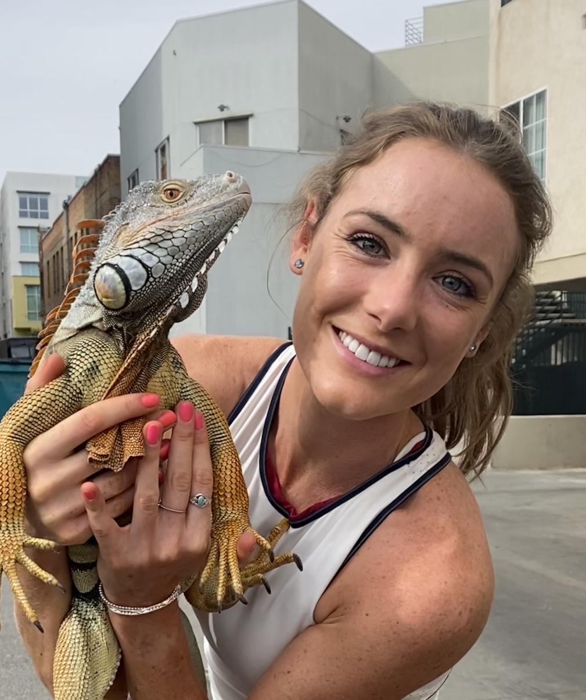

From Chalkboard to Keyboard: A Teacher's Journey into the World of Coding
May 23 2024
As a school teacher, my days were filled with lesson plans, grading papers, and inspiring young minds. Teaching was more than just a job—it was my passion, my calling, and the fulfillment of a lifelong dream. Yet, as fulfilling as it was, I couldn't shake the feeling that something was missing—a yearning for a new challenge, a fresh perspective, and an opportunity to expand my horizons beyond the confines of the classroom. Little did I know that my journey into the world of coding would be the answer to that longing, opening doors to endless possibilities and transforming the way I viewed both technology and education.
A Leap into the Unknown
The decision to explore coding was not one I took lightly. As a teacher with no background in computer science, the prospect of diving into a new field seemed daunting at first. Yet, fueled by a sense of curiosity and a desire to learn, I took the leap, immersing myself in online courses, tutorials, and coding bootcamps that promised to demystify the world of programming.
HDiscovering a New Language
As I delved deeper into the world of coding, I was struck by the parallels between programming languages and spoken languages—the syntax, grammar, and vocabulary that form the building blocks of communication. Like a linguist deciphering a foreign tongue, I found myself grappling with concepts like variables, functions, and loops, slowly but surely piecing together the puzzle of code.
Embracing a New Identity
Today, I stand at the intersection of education and technology, embracing my dual identity as both teacher and coder. While my days are no longer spent in front of a chalkboard, my passion for learning, teaching, and inspiring others remains as strong as ever. As I continue to navigate this ever-changing landscape, I am reminded of the transformative power of education—and the endless possibilities that await those who dare to dream, explore, and innovate.
Melissa Duncan